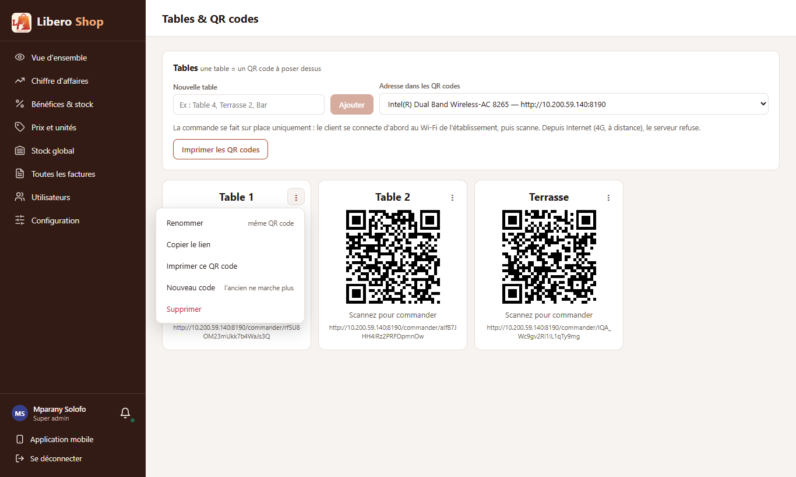
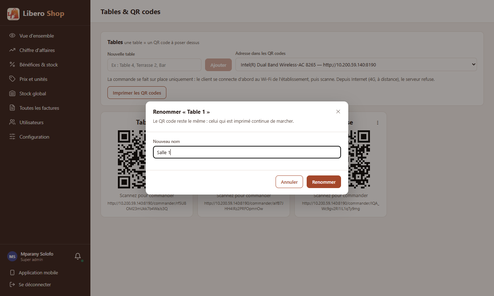
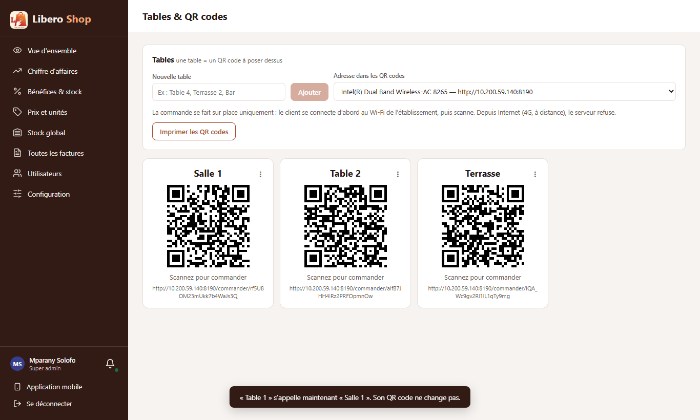

← Tous les comptes rendus de l'interface
UI-71« ⋮ » des tables et QR codes
Résumé
- Les trois boutons sous chaque QR code deviennent un « ⋮ » : Renommer, Copier le lien, Imprimer ce QR code, Nouveau code, Supprimer.
- Renommer est nouveau (côté serveur aussi) : le QR code imprimé reste valable, seul le nom change.
- Imprimer ce QR code imprime une seule table, au lieu de toutes.
- « Nouveau code » et « Supprimer » passent par la fenêtre de confirmation commune, qui dit la conséquence.
- Corrigé au passage : un clic dans la fenêtre « Renommer » était annulé par le fond de la fenêtre.
1. Ce qui a été fait
Figure 1 — Ce qui garde le QR code imprimé se fait d'un geste ; ce qui l'invalide demande confirmation.
Côté serveur, PUT /api/tables/{id} change le nom d'une table et garde son code ; un nom déjà porté par une
autre table est refusé (sa propre orthographe en majuscules ne l'est pas). Les commandes passées gardent l'ancien nom,
les suivantes portent le nouveau.
Corrigé : sur cette page, la fenêtre « Renommer » fermait au clic sur son fond par une expression qui
renvoyait « faux » pour tout autre clic ; Angular annule alors le clic, et le bouton « Renommer » ou la touche Entrée
n'envoyaient rien. C'est le même piège que celui déjà noté pour les touches de la caisse ; aucune autre fenêtre de
l'application ne l'utilise.
2. Le résultat en images
Mparany — administrateur (tables créées pour la capture, puis supprimées)

Figure 2 — Le « ⋮ » d'une table, avec ce que chaque entrée fait au QR code.

Figure 3 — Renommer : la fenêtre rappelle que le code imprimé continue de marcher.

Figure 4 — « Table 1 » s'appelle « Salle 1 », avec le même lien (même fin d'adresse sous le code).
3. À éviter / attendu
À éviter
(click)="$event.target === $event.currentTarget && close()"renvoie « faux » pour tout clic dans la fenêtre : le clic est annulé.
Attendu
(click)="onBackdrop($event)" // méthode qui ne renvoie rien4. Tableau récapitulatif
| Fichier | Changement |
|---|---|
backend/…/service/OnlineOrderService.java, repository/DiningTableRepository.java | renameTable : nouveau nom, même code, nom unique |
backend/…/web/DiningTableController.java | PUT /api/tables/{id} |
ui/…/core/api/online-order.api.ts | renameTable |
ui/…/features/admin/dining-tables.component.ts | « ⋮ », fenêtre Renommer, confirmations, impression d'une seule table |
| Règle | Test |
|---|---|
| Table renommée : même code ; nom d'une autre table refusé ; sa propre orthographe acceptée | OnlineOrderServiceTest |
| Entrées du menu ; renommer part du nom actuel ; le bouton envoie le formulaire ; nouveau code et suppression demandent d'abord | dining-tables-menu.spec.ts |
Tests : serveur au vert (636 tests), interface au vert (320 tests).
Signalé, hors de ce point : OnlineOrderService porte à la fois la gestion des tables et les commandes
en ligne ; un service des tables à part serait plus clair.